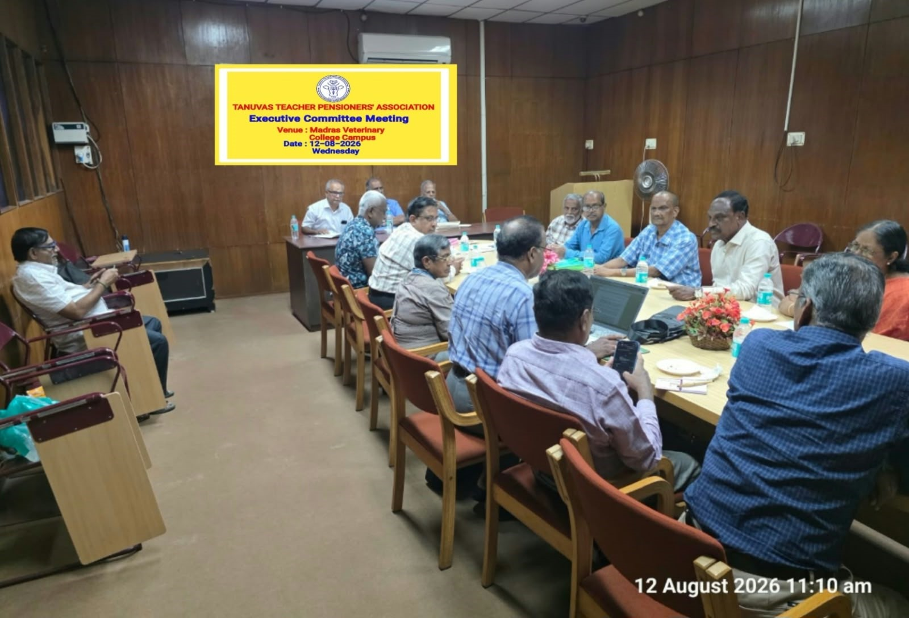

Special Executive Committee Meeting
Date: 12 August 2026
Time: 10.30 a.m.
Venue: Seminar Hall, Bioinformatics Centre, Madras Veterinary College Campus, Chennai – 600 007
Presided over by: Dr. N. Natarajan, President, TTPA

Members Present
President
General Secretary
Vice President
Secretary
Joint Secretary
Joint Secretary
Treasurer
Member
Member
Member
Member
Member
Member
Editor
Special Invitees
- Dr. P. S. Rahumathulla
- Dr. C. Balachandran
- Dr. N. Daniel Joy Chandran
- Dr. M. Thirunavukkarasu
- Dr. R. Ravindran
Proceedings
The meeting commenced with a welcome address by Dr. N. Natarajan, President, followed by an address by Dr. K. S. Palaniswami, General Secretary , who explained the purpose of convening the Special Executive Committee Meeting. He thanked the special invitees for sparing their time to participate in the deliberations.
Implementation of Government Orders and Members’ Grievances
Dr. G. Dhinakar Raj pointed out that there appeared to be inconsistencies in the implementation of different Government Orders by the University.
To resolve the issue, he suggested that:
- the benefits may be extended to eligible members who had already submitted representations; and
- the benefits may also be extended to eligible members who had neither received the benefits nor submitted representations.
Constitution of Grievance Committee
It was decided to constitute a Grievance Committee to prepare a report for submission to the University regarding retrospective placement and consequent fixation of pay of eligible members with reference to G.O. No. 149, G.O. No. 101, and G.O. No. 274 .
Chairman: Dr. P. S. Rahumathulla
Members: Dr. C. Balachandran, Dr. N. Daniel Joy Chandran and Dr. M. Thirunavukkarasu
Dr. M. Thirunavukkarasu, Special Invitee, suggested that all representations received from members should be consolidated and presented in a clear tabular format to facilitate better understanding and consideration by the University.
He stated that the table would be prepared before the ensuing Friday and circulated among the members of the specially constituted Committee.
Dr. P. S. Rahumathulla, Special Invitee, gave a detailed account of the Government Orders issued during different Pay Commissions.
He concurred with the suggestion of Dr. M. Thirunavukkarasu that the particulars furnished by members should be compiled in tabular form. The Committee could then scrutinise the details, ascertain the admissibility of the claims and prepare them for representation to the University by TTPA.
Dr. C. Balachandran assured the meeting that the Committee would work towards securing favourable action.
Audit Objections Relating to Income Tax
The meeting discussed the cases of 46 members of the Association who were facing audit objections regarding non-payment of income tax on the final surrender of earned leave at the time of superannuation.
It was noted that, despite repeated representations to the University and the Government, as well as discussions in a joint sitting with the Local Fund Audit authorities seeking withdrawal of these audit objections, no concrete positive response had been received.
The meeting therefore decided that the Association may pursue the matter through an appropriate legal forum, on lines similar to the course adopted by retired pensioners of TNAU, before any recovery action is initiated.
Dr. P. Sriram, Secretary , informed the meeting that details would be collected from the TNAU Pensioners’ Association and that members would subsequently be informed about the mode of contribution/payment towards the proposed legal course of action.
It was decided to proceed legally in respect of the long-pending audit para relating to income tax on final surrender of earned leave . The legal expenditure and pursuit of the case would be borne by the individual petitioners.
The proposed respondents would be the Registrar, TANUVAS and the Director, Local Fund Audit (LFA) . TTPA would provide a platform for discussion, coordination and support.
Conclusion
The meeting concluded with a vote of thanks proposed by Dr. P. Sriram, Secretary. A lunch was hosted by Dr. P. Sriram for the members and special invitees following the meeting.